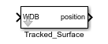
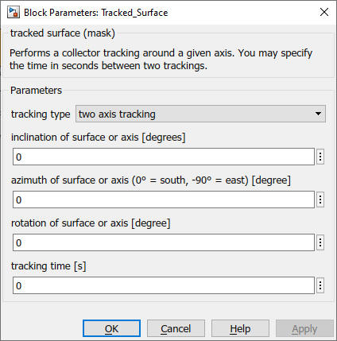

Tracked_Surface
Path: CARNOT/Weather
Purpose
Model for the calculation of axis tracking of surfaces, e.g. a collector.
Description
This block performs axis tracking of surfaces, e.g. a collector. Different
modes of axis tracking can be specified by the parameters.
The tracking model uses
the solar postion angles given by the Weather Data Bus WDB.
For the definition of
the collector angles see Fixed_Surface block.
Inputs:
Outputs:
Parameters and Dialog Box

Characteristics
Direct Feedthrough Yes
Sample
time
Inherited
from driving block
Vectorized
No